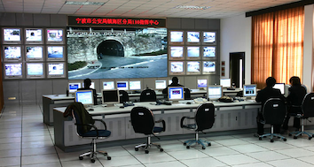

Golden Eye Technology was a leading system developer and service provider of safeguarding solutions in China during 1997 and 2004. It was reorganized as Golden Vision Technology in early 2005. I joined Golden Eye Technology in 2002 as a Software Engineer and quit Golden Vision Technology in 2006 when I was a Software Architect and Project Manager. My experience there involves post-delivery maintenance of software, development of a software framework based on redesign and refactoring, lead and management of development (small team).
Golden Vision (Golden Eye) Technology Co. Ltd., Beijing China

Projects (2002-2006)
| 01/2005-05/2006 | GEV/DVx: A software framework for real-time digital video applications |
|
Senior Software Engineer, Architect and Project Manager
|
|
| 01/2005-05/2006 | GEV: A system architecture for safeguarding applications |
|
Software Architect
|
|
| 11/2002-12/2004 | GoldenEye: A digital video surveillance system (for safeguarding) |
|
Software Engineer
|
|